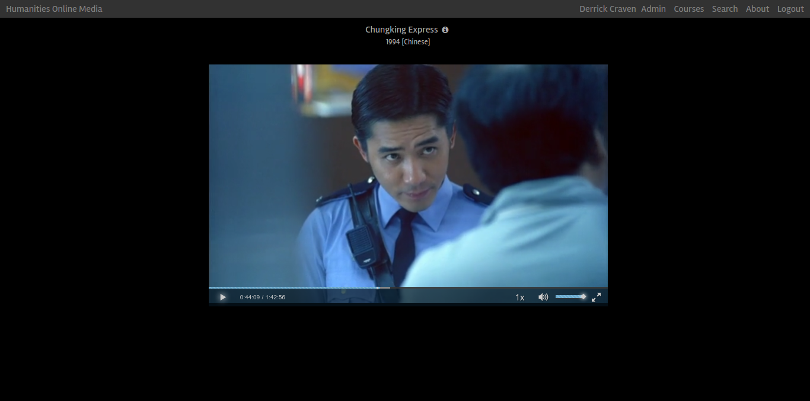
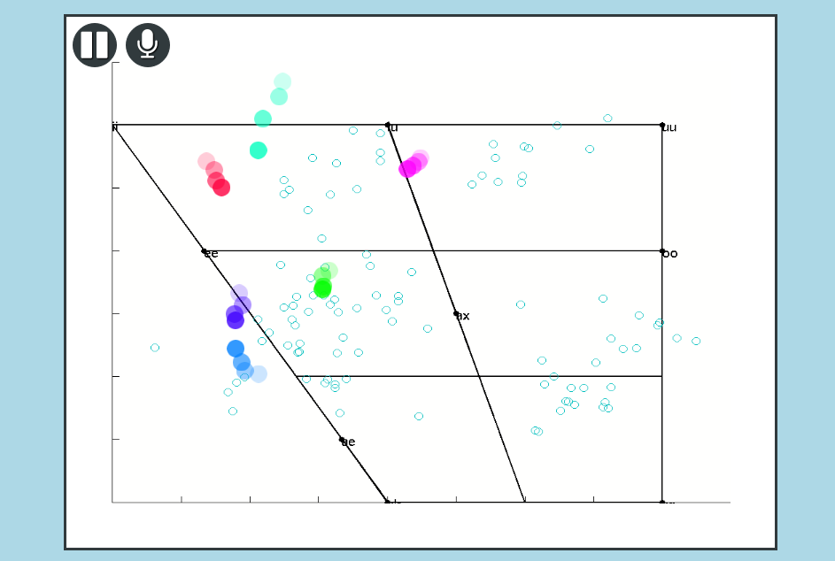
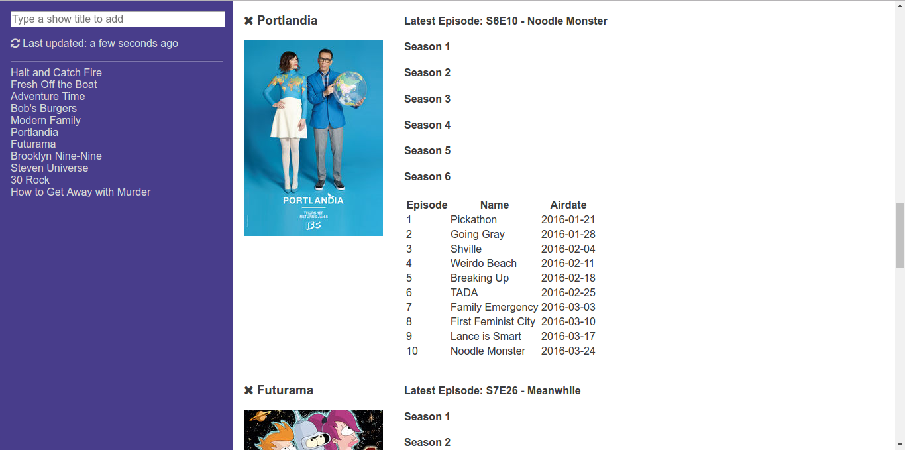

About Me
I like to build web-based applications that help brighten someone's day. I have built apps in JavaScript, PHP, and Python as well as writing much of my initial code in Java and C++.
Projects I've Worked On
Hummedia
The Hummedia project allows instructors to host videos with custom annotations. Users can annotate videos with interactive text, images and video, translate unknown words in subtitles, and select scenes to skip among many other features.
Automatic Pronunciation Evaluation (APE)
The Automatic Pronunciation Evaluation (APE) project allows foreign-language learners to receive visual feedback to help improve their pronunciation. The VowelWorm is a real-time pronunciation evaluator that runs in the browser.
TV Showtimes
I wanted an easier way to view when my favorite TV shows air new episodes so I built a simple TV Showtimes app. The app uses the TVmaze API to load basic metadata about different TV shows. The app stores all its data on the client to reduce API calls and increase page load speed. As of this writing, TVmaze does not yet support HTTPS so adding new shows may require specifically allowing HTTP requests from a page loaded with HTTPS. In other words, click the warning in Chrome's address bar and then click "Load unsafe scripts."
Work Experience
I have built web applications for several companies including FamilySearch, InsideSales.com and Brigham Young University.